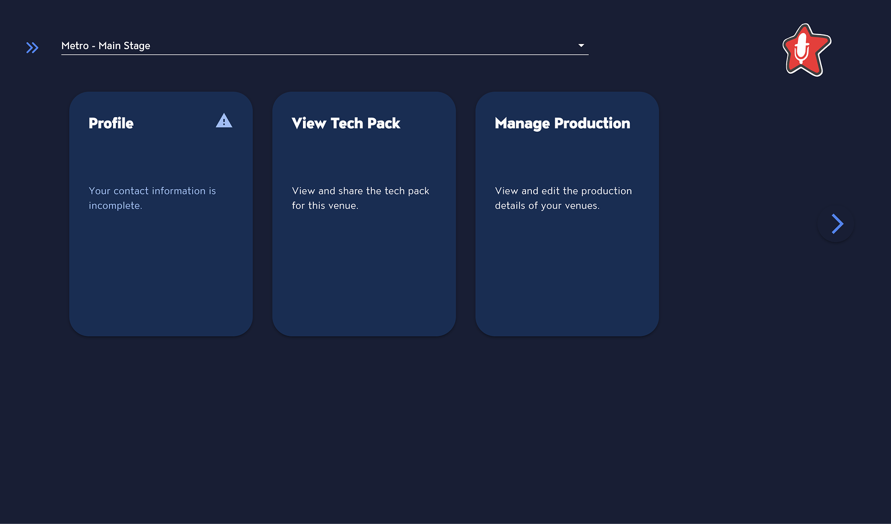
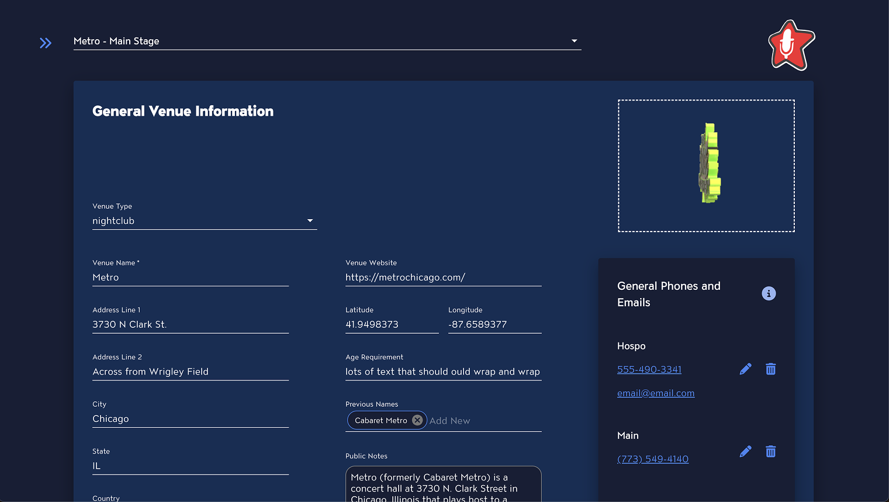
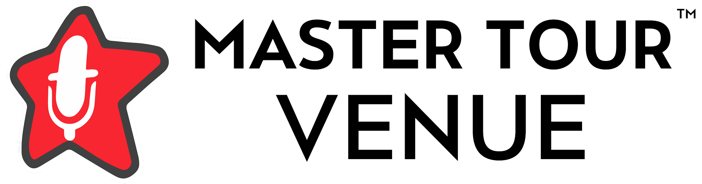
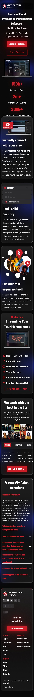

- Eventric
- New product
- Brand and web
More from Eventric
Alongside the mobile redesign, I worked across Eventric's other products: a new venue product, the Master Tour logo, and the company website.
On this page
Master Tour Venue, a new product
Master Tour Venue started with our CTO. The goal was to connect venues to Master Tour so accurate information flowed between both systems. The proof of concept was a Tech Pack that venues could claim, then sign up for Master Tour Venue to keep their details in Master Tour correct.
Out-of-date venue info is a massive pain point in touring. Bands and crew each have their own riders and load-in requirements, and venue details go stale quickly.
A contract designer started on the project before I joined, and the green color scheme is their work. Once I came on, I oversaw the main designs for two pieces. The Tech Pack is a shareable link venues can send to touring crews. The Admin Dashboard is where venue admins sign in and keep their information up to date. Since I was also working on Master Tour Mobile, I built a design system using Material Design's Figma plugin, then used it to course-correct the scale, color, and layout of pages that had already been designed.




Logo and website
Logo redesign
The Master Tour logo needed to be brought into a modern era. The old star was also wider than it was tall, which made it hard to use in square spaces like a mobile app icon. I redrew the star to fix both, then carried it across the Master Tour, Master Tour × Eventric, and Master Tour Venue logos. I also tried over 500 font variants for the wordmark, but in the end the CEO decided to keep the original font.

Website
I redesigned the Master Tour website, its first update in seven years. The client list was out of date, and we wanted to refresh the brand for people who might be finding us for the first time. The website is also where tour managers sign up for their 14-day free trial, which makes it the first step of the journey for our paying customers. First impressions matter.

